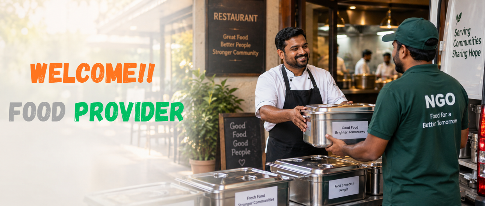

Your surplus food can help people in need.
Who are Food Providers?
Food Providers are places that prepare or serve food for people. They can include restaurants, hotels, messes, and catering services. Wedding organizers, party organizers, and other food-serving places can also participate.
Why Do Food Distributors Need Food Providers?
Food Distributors such as NGOs and social helping organizations support people in need. They need access to safe surplus food that can be collected and distributed. Food Providers can make suitable surplus food available through Sevam. This helps food reach people who need it instead of being wasted.
What Is the Role of Food Providers?
Food Providers can play an important role in reducing unnecessary food waste. They can identify safe surplus food that is still suitable for consumption. They can list the available food and its details on Sevam. This helps connect their surplus food with suitable Food Distributors.
How Does Sevam Help Food Providers?
Sevam gives Food Providers an option to offer their safe surplus food to Food Distributors. They can offer the food at a reasonable price and recover some of its value. This can help reduce unnecessary financial loss from unused surplus food. At the same time, the food can reach people who need it through Food Distributors.